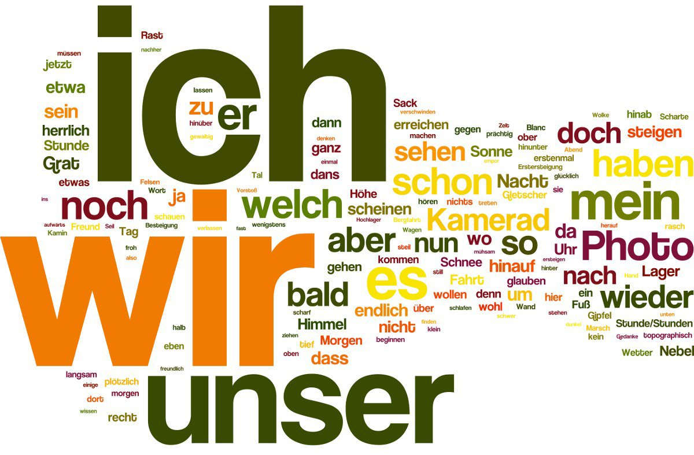

Немецкий язык — национальный язык немцев, австрийцев, лихтенштейнцев, германошвейцарцев и американских немцев; официальный язык Германии, Австрии, Лихтенштейна, один из официальных языков Швейцарии, Люксембурга и Бельгии.
Немецкий язык сложился в процессе конвергенции нескольких западногерманских диалектов.
На формирование современного немецкого языка большое влияние оказали писатели и философы: Мартин Лютер, Иоганн Гёте, братья Грим. Полностью формирование литературного немецкого языка завершилось в конце XVIII века, когда были сформированы основные грамматические и орфографические нормы, изданы словари.
1. Фиксированное ударение — чаще всего на первом слоге, что влияет на ритм всей фразы.
2. Согласование — существительные, прилагательные и артикли должны согласовываться по роду, числу и падежу.
3. Придыхание в согласных p, t, k — наиболее выражено, если согласный находится в конце слова.